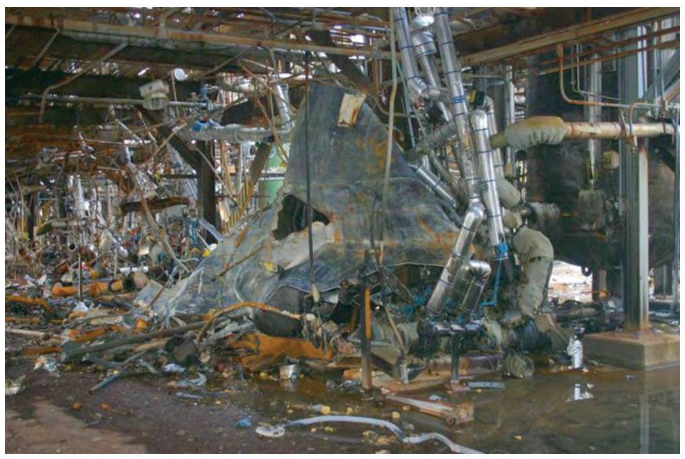
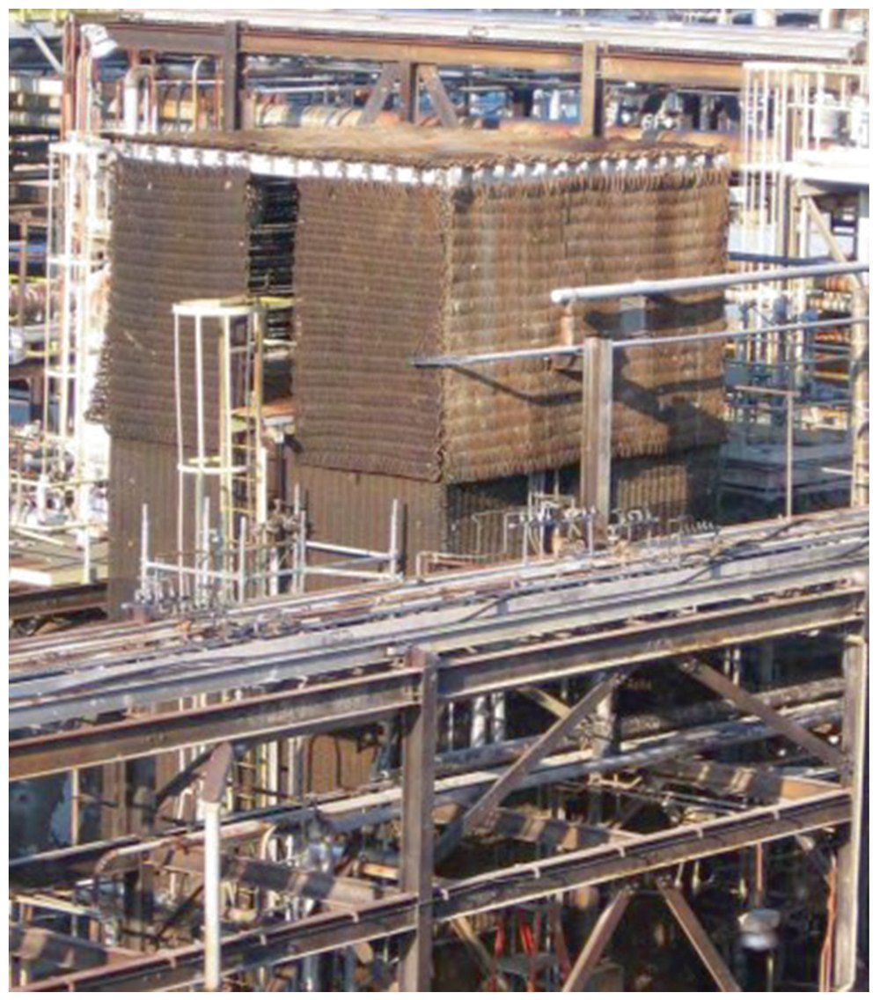
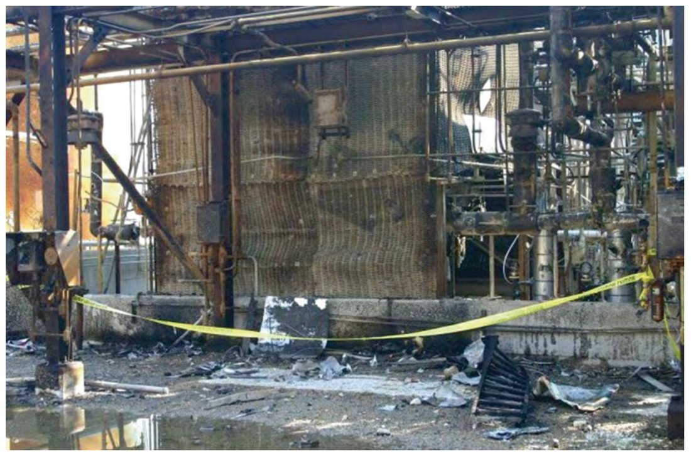

Modul lanjutan · Proses Industri dan Manajemen Risiko
Analisis What-if dan SWIFRA
Dari pertanyaan “bagaimana bila” ke penilaian risiko terstruktur — dengan satu studi kasus nyata
Team Teaching MK
Program Studi Kesehatan Masyarakat Program Sarjana
Tujuan pembelajaran
Setelah sesi ini, Anda mampu mengerjakan empat hal ini
menjelaskan kedudukan analisis what-if di antara metode PHA lain dan dasar normatifnya;
menjalankan sepuluh langkah what-if pada satu sistem atau tugas;
membedakan hasil lembar what-if tradisional dari lembar SWIFRA;
menyusun satu baris SWIFRA lengkap dengan L, S, R, pengendalian tambahan, dan persentase penurunan risiko.
Pembuka
Pertanyaan “bagaimana bila” datang terlalu sering setelah kejadian
Untuk kecelakaan fatal dan insiden serius, pertanyaan ini mungkin mencegah atau mengurangi dampaknya bila diajukan sebelum kejadian.
Rantai pertanyaan dari satu proses kimia: bagaimana bila terjadi reaksi liar di dalam bejana bertekanan? Bagaimana bila bejana itu meledak hebat? Bagaimana bila pelarut mudah terbakar menyembur dan langsung tersulut? Bagaimana bila pecahannya menghantam perpipaan di dekatnya dan melepaskan bahan beracun? Bagaimana bila bahan itu mengenai pekerja dan masyarakat sekitar?
01
Bagian satu
Kedudukan analisis what-if
Asal usul
What-if dikembangkan sebagai alternatif HAZOP yang lebih ringan
Dikembangkan industri kimia Inggris pada 1960-an.
Dipandang sebagai alternatif yang lebih mudah daripada HAZOP.
Kini lazim sebagai metode analisis bahaya proses, dan dipakai juga di energi, manufaktur, pangan, transportasi, serta layanan kesehatan.
Yang dicari. Bahaya dan skenario paparan sistem, konsekuensi, penyebab, penyimpangan, kelemahan, pengendalian yang sudah ada, dan pengendalian yang masih dibutuhkan.
Sumber: Lyon & Popov (2022), bab 7.
Dasar normatif
What-if diakui sebagai metode PHA
Amerika Serikat
OSHA 29 CFR 1910.119 (1992): analisis bahaya proses untuk bahan kimia berbahaya 10.000 pon atau lebih.
EPA 40 CFR 68 Risk Management Plan (1994) sejalan dengan PSM, dengan sasaran masyarakat dan lingkungan.
Britania dan standar konsensus
Sejak 1999 usaha di Britania wajib menilai risiko menurut HSE.
What-if tercantum pada ISO 31010:2019, Z590.3 Prevention through Design, dan ASSP TR-31010-2020.
Metode
What-if: satu dari enam metode pada OSHA 1910.119(e)(2)
Metode
Deskripsi
What-If
tim multiskill menyoal dan menjawab rangkaian pertanyaan bagaimana bila
Tetapkan konteks. Rumuskan maksud, lingkup, batas, tingkat kerincian, dan kriterianya.
Bentuk tim. Tim lintas fungsi yang terlatih, ditambah fasilitator dan juru catat.
Komunikasikan tujuan. Maksud, lingkup, batas, peran, dan definisi disampaikan ke tim.
Kumpulkan informasi. Gambar dan instrumentasi, skema, manual, panduan pemeliharaan, riwayat insiden.
Pecah menjadi tugas atau elemen. Kegiatan diuraikan menjadi langkah berurutan.
Sumber: Lyon & Popov (2022), bab 7, langkah 1–5.
Langkah 6–10
Lima langkah berikutnya menghasilkan dan menutup temuan
Susun pertanyaan. Tiap tugas ditanyai satu per satu: gangguan prosedur, salah komunikasi, kesalahan operator, kegagalan alat.
Identifikasi bahaya, penyebab, pengendalian, konsekuensi. Menjawab tiap pertanyaan menghasilkan keempatnya.
Pilih pengendalian tambahan. Bila belum terkendali, pilih mengikuti hierarki pengendalian.
Komunikasikan hasil. Lembar difinalkan dan rekomendasinya disampaikan kepada pengambil keputusan.
Dokumentasikan temuan. Lembar menjadi rencana aksi: penanggung jawab dan tenggat.
Sumber: Lyon & Popov (2022), bab 7, langkah 6–10.
Peran
Tiga peran yang harus ada sejak langkah pertama
Peran
Tanggung jawab
Fasilitator
memimpin pertanyaan, menyempurnakan daftar, menjaga tim pada tujuan
Juru catat
merekam setiap pertanyaan dan jawaban selama diskusi berlangsung
Anggota lintas fungsi
membawa pengetahuan rancangan, operasi, pemeliharaan, dan K3
Yang dicari pada anggota tim. Pengetahuan standar rancangan, kode regulasi, potensi kesalahan operasi, riwayat insiden, kebutuhan pemeliharaan, dan pengalaman praktis lain.
Enam kolom itu dibaca sebagai satu baris penalaran
Kolom
Isi
ID#
nomor baris, dipakai merujuk tindak lanjut
What-If?
pertanyaan tunggal yang dapat dijawab
Causes
apa yang membuatnya mungkin terjadi
Consequences
apa yang terjadi bila pertanyaan itu menjadi nyata
Controls
pengendalian yang sudah terpasang sekarang
Recommendations
pengendalian tambahan yang diusulkan
Sumber: Lyon & Popov (2022), Gambar 7.2.
Manfaat dan batas
Metode ini mudah dipakai, tetapi sukar dipertanggungjawabkan
Manfaat
Mudah diterapkan pada hampir semua situasi atau sistem.
Membuka peluang pemangku kepentingan tanpa latar penilaian risiko untuk ikut memberi masukan.
Umumnya menambah pemahaman mendalam tentang sistem.
Batasan
Berguna hanya bila pertanyaannya tepat.
Bersandar pada intuisi dan pengalaman.
Hasilnya sukar diubah menjadi argumen yang meyakinkan.
Sumber: Lyon & Popov (2022), bab 7.
Titik balik
Kelemahan terbesarnya: ini analisis bahaya, bukan penilaian risiko
What-if tradisional tidak memuat fungsi penaksiran risiko.
Akibat pertama. Analisisnya tidak membedakan bahaya yang satu dari yang lain, dan tidak menghasilkan urutan prioritas tingkat risiko.
Akibat kedua. Setiap bahaya dipandang setara, sehingga upaya dan sumber daya penurunan risiko sukar diprioritaskan.
Sumber: Lyon & Popov (2022), bagian 7.5. Analisis bahaya memang menemukan bahaya, tetapi tidak memberi informasi berbasis risiko yang dibutuhkan untuk memprioritaskan dan mengelola risiko.
04
Bagian empat
SWIFRA: what-if terstruktur dengan taksiran risiko
Yang ditambahkan
SWIFRA menambahkan taksiran risiko dan dua pertanyaan lanjutan
Dua penambahan
Taksiran risiko kualitatif atau semikuantitatif pada tiap skenario, sehingga risiko dapat diperingkat.
Pertanyaan diperluas: bukan hanya “bagaimana bila”, tetapi juga bagaimana dan mengapa skenario itu dapat terjadi.
Guna tiga pertanyaan itu
Rangkaian apa–bagaimana–mengapa membuka faktor penyebab sistemik di bawah penyebab yang tampak, serupa dengan metode lima mengapa.
Sumber: Lyon & Popov (2022), bagian 7.5.
Langkah SWIFRA 1–4
Empat langkah pertama menyiapkan dan mengisi lembar
Susun pertanyaannya. Kumpulkan informasi lewat telaah dokumen, wawancara, insiden lampau, dan pengamatan; susun daftar pertanyaan yang relevan.
Buat lembar kerjanya. Fasilitator memuat daftar pertanyaan ke dalam lembar SWIFRA.
Jawab apa–bagaimana–mengapa. Tim menelusuri efek berantai dan penyebabnya tiap pertanyaan, lalu mengisi kolomnya.
Identifikasi pengendalian yang ada. Pengendalian terpasang dicatat beserta keandalan dan efektivitasnya.
Sumber: Lyon & Popov (2022), bagian 7.5, langkah 1–4.
Langkah SWIFRA 5–8
Empat langkah berikutnya menilai dan menurunkan risiko
Analisis risiko. Tim menaksir kemungkinan, keparahan, dan tingkat risiko tiap baris.
Evaluasi risiko. Tingkat risiko dibandingkan dengan kriteria, lalu ditetapkan dapat diterima atau tidak.
Tambahkan pengendalian. Pengendalian dipilih mengikuti hierarki pengendalian, dengan mempertimbangkan efektivitas, keandalan, dan kelayakan.
Analisis penurunan risiko. Ditaksir kemungkinan kedua, keparahan kedua, tingkat risiko kedua, dan persentase penurunan risiko.
Sumber: Lyon & Popov (2022), bagian 7.5, langkah 5–8.
Lembar SWIFRA
Lembar SWIFRA memuat kolom yang tidak ada pada lembar tradisional
Bagaimana bila perusahaan menjalankan analisis ini sebelum kejadian?
Pertanyaan itulah yang diajukan penulis bab kepada pembacanya, dan jawabannya dipakai untuk mengukur manfaat kedua metode.
Perbandingan yang akan kita lakukan. Satu tugas yang sama, yaitu start-up unit methomyl, dibaca dua kali: sekali dengan lembar tradisional, sekali dengan lembar SWIFRA. Perhatikan bahwa yang berubah bukan hanya bentuk lembar, melainkan kesimpulan yang dapat diambil darinya.
Fakta
Bejana bertekanan pecah saat unit dinyalakan ulang
Aspek
Fakta
Tempat dan waktu
unit methomyl, Institute, Virginia Barat, 28 Agustus 2008, pukul 22.35
Peristiwa
reaksi liar di residue treater 4.500 galon; bejana pecah
Akibat langsung
sekitar 2.200 galon pelarut dan residu menyembur lalu terbakar
Korban
dua pekerja meninggal: satu di lokasi, satu 41 hari kemudian
Korban lain
enam petugas pemadam dan dua kontraktor dirawat karena paparan
Sumber: CSB (2011), laporan akhir investigasi ledakan tangki limbah pestisida.
Konteks
Kejadian berlangsung saat unit dinyalakan ulang setelah perbaikan besar
Unit dinyalakan ulang setelah penghentian panjang untuk memperbarui sistem kendali dan mengganti residue treater.
Unit memakai metil isosianat untuk menghasilkan metomil — bahan yang sama dengan kasus Bhopal 1984.
Tangki harian metil isosianat berdiri 70 kaki dari residue treater, dilindungi selimut pelindung.
Tidak terjadi pelepasan metil isosianat: tangkinya tidak rusak.
Sumber: CSB (2011); Lyon & Popov (2022), bagian 7.9.
Bekas kejadian
Kerusakan yang ditinggalkan menunjukkan skala energinya

Kerusakan luas pada unit dan sekitarnya. Sumber: CSB, laporan akhir, halaman 8 — dikutip melalui Lyon & Popov (2022), Gambar 7.5.
Bekas kejadian
Satu pengendalian pasif menyelamatkan tangki di sebelahnya

Sumber: CSB, laporan akhir, halaman 9 — dikutip melalui Lyon & Popov (2022), Gambar 7.6.
Yang terjadi. Pecahan dari residue treater menghantam selimut pelindung itu dan api memancarkan panas hebat ke arahnya, tetapi tangki harian di dalamnya tidak rusak.
Mengapa penting. Selimut itu pengendalian pasif setingkat rekayasa: bekerja tanpa listrik, operator, dan prosedur.
Fakta
Investigasi menemukan enam faktor penyebab dan penyumbang
Penyimpangan dari prosedur start-up tertulis.
Pengelakan alat keselamatan kritis yang dimaksudkan mencegah kondisi itu.
Telaah keselamatan pra-start-up yang tidak memadai.
Pelatihan operator yang tidak memadai atas sistem kendali yang baru dipasang.
Perubahan sementara yang tidak dievaluasi.
Peralatan yang rusak atau hilang.
Sumber: CSB (2011), dikutip pada Lyon & Popov (2022), bagian 7.8.
Jalur risiko
Keenam faktor itu terangkai menjadi satu jalur risiko
Tim yang tidak berpengalaman berhenti pada prosedur dan pelatihan
Yang mungkin terjadi. Tim menilai peristiwa ini sebagai jenis nyaris celaka, atau gagal melihat efek berantainya.
Akibatnya. Rekomendasi yang muncul berhenti pada penambahan prosedur dan pelatihan — dua pengendalian tingkat administratif.
Poin kunci: tim yang lebih berpengalaman dengan pertanyaan mengapa dan bagaimana akan menggali lebih dalam dan menemukan faktor penyebab yang berantai menjadi efek sekunder.
Perbandingan
Pertanyaan berantai itulah yang mengubah tingkat keparahannya
Bagaimana bila terjadi reaksi kimia liar di dalam bejana bertekanan 4.500 galon?
Bagaimana bila bejana itu meledak?
Bagaimana bila pelarut mudah terbakar menyembur dari bejana dan langsung menyala?
Bagaimana bila pecahan bejana menghantam perpipaan di dekatnya atau tangki metil isosianat hingga melepaskan bahan beracun?
Rangkaian ini yang membuat tim sampai pada tingkat keparahan katastrofik, bukan sekadar nyaris celaka. Sumber: Lyon & Popov (2022), bagian 7.9.
Kedua barisnya sama. Nilai awal 3 dikali 4 sama dengan 12, tingkat tinggi. Setelah pengendalian ditambahkan menjadi 2 dikali 3 sama dengan 6, tingkat sedang, turun 50 persen.
Lapisan pengendalian
Lapisan pengendaliannya banyak, dan tiap lapisan punya batas
Pengendalian
Tingkat dan batasnya
Menyingkirkan metil isosianat dari pipa transfer dan membilasnya dengan nitrogen
minimalisasi
Integritas mekanik dan penggantian bejana dengan baja tahan karat melalui pengendalian perubahan
administratif dan rancangan
Selimut pelindung jaring baja di sekeliling tangki harian
rekayasa pasif, terbukti bekerja
Monitor udara di batas pagar
peringatan; 800 kaki dari unit, hanya efektif bila di sisi bawah angin
Sumber: Lyon & Popov (2022), bagian 7.9; CSB (2011).
Setelah kejadian
Selimut pelindung diperiksa, dan hasilnya menjelaskan mengapa tangki selamat

Sumber: CSB, laporan akhir — dikutip melalui Lyon & Popov (2022), Gambar 7.9.
Yang diperiksa. Selimut dan isolasi dilepas, lalu tangki diperiksa dan diuji tekananya.
Hasilnya. Tidak ada bukti kerusakan panas; selimut itu sangat efektif.
Tindak lanjut
Rekomendasi CSB menyasar mutu analisisnya, bukan hanya alatnya
Revisi kebijakan analisis bahaya proses tingkat korporasi.
Sahkan semua asumsi, termasuk risiko pengelakan pengaman.
Tuntaskan semua fase operasi dan topik khusus pada bab 9 pedoman CCPS.
Latih seluruh fasilitator analisis sebelum ditugaskan memimpin tim.
Latih anggota tim pemadam fasilitas pada sistem manajemen insiden nasional.
Tingkatkan monitor udara dan kajian faktor manusia ruang kendali.
Sumber: CSB (2011), dikutip pada Lyon & Popov (2022), bagian 7.9.
Sintesis
Tiga hal yang membedakan analisis dangkal dari analisis yang berguna
Pertanyaan berantai, bukan pertanyaan tunggal. Satu bejana yang gagal baru menjadi katastrofik setelah efek berantainya ditelusuri sampai ujung.
Angka yang dapat ditelusuri. Kemungkinan dinyatakan dalam riwayat kejadian; keparahan dinyatakan dalam definisi skala. Keduanya dapat diaudit.
Pengendalian yang nyata. Usulan berhenti pada prosedur dan pelatihan selama analisisnya berhenti pada penyebab yang tampak.
Referensi
Referensi (1 dari 2): sumber utama dan laporan kasus
Center for Chemical Process Safety. (2008). Guidelines for Hazard Evaluation Procedures. New York: American Institute of Chemical Engineers.
Chemical Safety Board. (2011). Bayer CropScience Pesticide Waste Tank Explosion. Laporan akhir dirilis 20 Januari 2011. https://www.csb.gov/bayer-cropscience-pesticide-waste-tank-explosion/
Chemical Safety Board. Video investigasi ledakan tangki limbah pestisida Bayer CropScience. https://www.youtube.com/watch?v=bcfvzGtuamM
Lyon, B. K., & Popov, G. (2018). Risk Management Tools for Safety Professionals. Park Ridge, IL: American Society of Safety Professionals.
Lyon, B. K., & Popov, G. (2020). The power of what-if: assessing and understanding risk. Professional Safety, 65(6), 36–43.
Lyon, B. K., & Popov, G. (2022). Chapter 7: “What-if” analysis methods. Dalam G. Popov, B. K. Lyon, & B. Hollcroft, Risk Assessment: A Practical Guide to Assessing Operational Risks (edisi ke-2). Hoboken, NJ: John Wiley & Sons. doi:10.1002/9781119798323.ch7
ANSI/ASSP. (2016). Prevention Through Design: Guidelines for Addressing Occupational Hazards and Risks in Design and Redesign Processes [ANSI/ASSP Z590.3-2011 (R2016)]. Park Ridge, IL: ASSP.
ASSP Technical Report. (2020). Risk Management: Techniques for Safety Practitioners. Park Ridge, IL: ASSP.
Health and Safety Executive. (1999). Management of Health and Safety at Work Regulations 1999. London: HSE.
U.S. Environmental Protection Agency. (1994). 40 CFR Part 68: Chemical Accident Prevention Provisions (Risk Management Plan Rule).
U.S. Occupational Safety and Health Administration. (1992). 29 CFR 1910.119: Process Safety Management of Highly Hazardous Chemicals.
Penutup
Pertanyaannya sederhana; mutunya bergantung pada keberanian menindaklanjutinya
Tanya “bagaimana bila” → lanjutkan dengan “bagaimana” dan “mengapa” → nilai risikonya → usulkan pengendalian → taksir ulang.
Pertanyaan penutup dari sumber. Bagaimana bila organisasi itu menjalankan penilaian risiko yang efektif atas proses kimianya sebelum kejadian? Jawabannya, menurut penulisnya, kemungkinan besar dapat membantu mengenali masalahnya dan kebutuhan menyingkirkan bahan paling berbahaya itu.